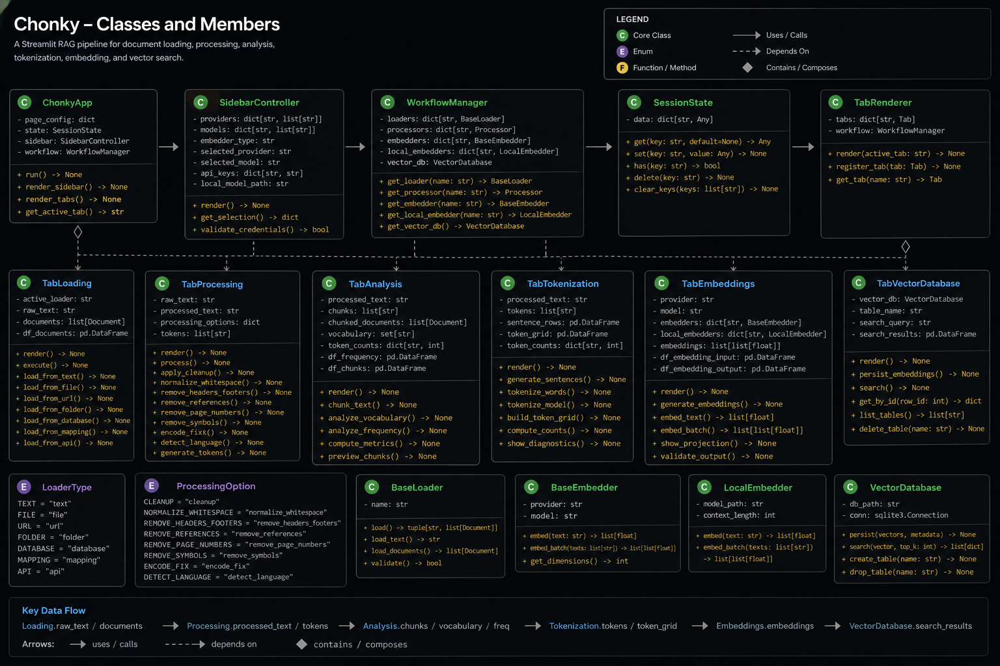

Overview

🧠 Features
| Feature |
Description |
| Document ingestion |
Load text from local files, NLTK corpora, PDFs, Word documents, spreadsheets, notebooks, email files, web pages, public sources, cloud buckets, and connected document providers. |
| Geometry-aware PDF extraction |
Use PyMuPDF-backed geometric extraction with header/footer band controls, page-break preservation, repeat removal, spacing repair, artifact cleanup, and hyphenation repair. |
| Text preprocessing |
Remove HTML, Markdown, XML, symbols, numerals, numbers, punctuation, images, encoding artifacts, stopwords, fragments, misspellings, repeated delimiters, and excess whitespace. |
| NLTK processing |
Run word tokenization, sentence tokenization, stemming, lemmatization, part-of-speech tagging, and named-entity recognition. |
| Corpus metrics |
Display characters, token counts, vocabulary size, type-token ratio, hapax ratio, average token length, stopword ratio, lexical density, and readability scores. |
| Semantic analysis |
Chunk processed text by characters or tokens, generate vocabulary and token-frequency distributions, and inspect top-token charts. |
| Token diagnostics |
Render sentence chunks, fixed-width token grids, sparsity/padding diagnostics, sentence-length distributions, and embedding-readiness metrics. |
| Embedding providers |
Generate embeddings through OpenAI and Gemini provider wrappers, with model, task, and dimensional controls. |
| Embedding diagnostics |
Inspect generated embeddings with t-SNE and UMAP dimensionality-reduction diagnostics. |
| Vector persistence |
Store embeddings in SQLite vector tables using sqlite-vec and LangChain-compatible vector store workflows. |
| Similarity retrieval |
Run semantic similarity search with top-k controls and similarity-threshold filtering. |
| Cloud and connected sources |
Load from Google Cloud files/buckets, AWS S3 files/buckets, OneDrive, SharePoint, GitHub, web crawlers, PubMed, and open-city datasets. |
🧭 Application Tabs
The current Streamlit app is organized into the following tabs.
| Tab |
Purpose |
Primary Inputs |
Primary Outputs |
| Loading |
Ingest documents from local, web, public, email, notebook, and cloud sources. |
Uploaded files, URLs, repository metadata, corpus selectors, cloud identifiers, API keys. |
documents, raw_documents, raw_text, active loader metadata, corpus metrics. |
| Text Processing |
Clean, normalize, and transform the active raw text. |
raw_text, active loader, cleanup checkboxes, NLTK options, PDF/Word/HTML-specific controls. |
processed_text, displayed_text, processing statistics, token/NLP artifacts. |
| Semantic Analysis |
Chunk processed text and compute vocabulary/frequency diagnostics. |
processed_text, chunking mode, chunk size, overlap. |
chunked_documents, tokens, vocabulary, frequency distribution. |
| Data Tokenization |
Transform processed text into sentence/token structures and readiness diagnostics. |
processed_text, token lists, sentence segmentation. |
sentence rows, fixed-width token grids, top-token histograms, sparsity metrics. |
| Tensor Embeddings |
Generate hosted embeddings and inspect reduced vector space. |
Processed text or chunked documents, OpenAI/Gemini model controls. |
embedding vectors, embedding dataframe, t-SNE/UMAP projections. |
| Vector Database |
Persist embeddings in sqlite-vec and run semantic retrieval. |
embedding vectors, embedding text, provider, model, document/collection name. |
vector table, persisted chunks, similarity-search results. |
🏛 Architecture
Document Sources
│
├── Local Files / Corpora / Email / Notebooks
├── Web / Wikipedia / ArXiv / GitHub / PubMed / Open City
└── Cloud Files / Buckets / OneDrive / SharePoint
│
▼
Loading Tab
│ raw_text + documents
▼
Text Processing Tab
│ processed_text
▼
Semantic Analysis Tab
│ chunks + vocabulary + frequencies
▼
Data Tokenization Tab
│ sentence rows + token grids + readiness diagnostics
▼
Tensor Embeddings Tab
│ embeddings + provider/model metadata
▼
Vector Database Tab
│ sqlite-vec tables + similarity search
▼
Retrieval / RAG-Ready Outputs
🧰 Setup Instructions
⚡ Clone the Repository
git clone https://github.com/is-leeroy-jenkins/Chonky.git
cd Chonky
python -m venv .venv
▶️ Activate the Environment
Windows PowerShell
.\.venv\Scripts\Activate.ps1
Windows Command Prompt
.\.venv\Scripts\activate.bat
macOS / Linux
source .venv/bin/activate
📦 Install Requirements
python -m pip install --upgrade pip
python -m pip install -r requirements.txt
🚀 Run Chonky
python -m streamlit run app.py
🔑 API Key Setup
The sidebar exposes API key inputs for hosted embedding, cloud, and future vector-service workflows.
Set only the providers you plan to use.
| Key |
Purpose |
Used By |
OPENAI_API_KEY |
OpenAI hosted embeddings and related OpenAI workflows. |
OpenAI Embeddings expander. |
GEMINI_API_KEY |
Google Gemini embedding workflows. |
Gemini Embeddings expander. |
GROQ_API_KEY |
Groq/Grok-related provider workflows where enabled by the wrapper layer. |
Provider configuration. |
GOOGLE_API_KEY |
Google API-backed loaders and services. |
Google-connected loaders and services. |
GOOGLE_APPLICATION_CREDENTIALS |
Google service-account JSON path. |
Google Cloud file and bucket loaders. |
PINECONE_API_KEY |
Reserved for future Pinecone vector-service workflows. |
Future vector integrations. |
Windows PowerShell Example
$env:OPENAI_API_KEY="your_openai_key"
$env:GEMINI_API_KEY="your_gemini_key"
$env:GROQ_API_KEY="your_groq_key"
$env:GOOGLE_API_KEY="your_google_key"
macOS / Linux Example
export OPENAI_API_KEY="your_openai_key"
export GEMINI_API_KEY="your_gemini_key"
export GROQ_API_KEY="your_groq_key"
export GOOGLE_API_KEY="your_google_key"
🧪 Example Usage
Basic Text Processing
from processors import TextParser
processor = TextParser( )
raw_text = "<p>This is an example document.</p>"
clean_text = processor.remove_html( raw_text )
clean_text = processor.normalize_text( clean_text )
clean_text = processor.collapse_whitespace( clean_text )
print( clean_text )
Chunk Text for Embedding
from nltk.tokenize import word_tokenize
text = "This is a processed document ready for semantic analysis."
tokens = word_tokenize( text )
chunks = [ " ".join( tokens[ index:index + 100 ] ) for index in range( 0, len( tokens ), 100 ) ]
print( chunks )
Similarity Retrieval with sqlite-vec
import sqlite3
import sqlite_vec
from langchain_community.embeddings.sentence_transformer import SentenceTransformerEmbeddings
from langchain_community.vectorstores import SQLiteVec
conn = sqlite3.connect( "vectors.db" )
conn.enable_load_extension( True )
sqlite_vec.load( conn )
embedding_fn = SentenceTransformerEmbeddings( model_name="all-MiniLM-L6-v2" )
vector_store = SQLiteVec(
connection=conn,
table_name="example__OpenAI__text-embedding-3-small__1536",
embedding=embedding_fn,
)
results = vector_store.similarity_search( query="What is this document about?", k=5 )
for document in results:
print( document.page_content )
📥 Document Loading
The Loading tab is organized into local, web, and cloud document groups. Each loader normalizes
content into LangChain Document objects and updates the shared raw-text buffer for downstream
processing.
Local Documents
| Loader |
Supported Input |
Purpose |
| Corpora Loader |
NLTK Brown, Gutenberg, Reuters, WebText, Inaugural, State of the Union, or local text directory. |
Load reference corpora or local .txt files for NLP analysis. |
| Text Loader |
.txt, .text, .log |
Load plain text files. |
| CSV Loader |
.csv |
Load delimited records with delimiter and quote-character controls. |
| XML Loader |
.xml |
Load semantic XML, split XML documents, parse XML trees, and run XPath queries. |
| Word Document Loader |
.docx |
Extract Word document text and metadata. |
| PDF Loader |
.pdf |
Extract PDF text using geometry-aware PyMuPDF parsing or legacy loader mode. |
| PowerPoint Loader |
.pptx |
Extract slide text from PowerPoint files. |
| Jupyter Notebook Loader |
.ipynb |
Load notebook cells with optional outputs and traceback handling. |
| Excel Loader |
.xlsx, .xls |
Load spreadsheets into SQLite tables or unstructured document mode. |
| Markdown Loader |
.md, .markdown |
Load Markdown as a single document or parsed elements. |
| HTML Loader |
.html, .htm |
Load local HTML documents. |
| JSON Loader |
.json, .jsonl |
Load JSON using jq schema, optional content key, JSON Lines mode, and text/structured selection. |
Web Documents
| Loader |
Input |
Purpose |
| ArXiv Loader |
Query text. |
Retrieve arXiv documents with character-limit controls. |
| Wikipedia Loader |
Query text. |
Retrieve Wikipedia documents with max-document and max-character controls. |
| GitHub Loader |
GitHub API URL, repository, branch, file-type filter, optional token. |
Load repository files from GitHub. |
| Outlook Loader |
.msg |
Load Outlook message files. |
| Web Loader |
One or more URLs. |
Load web pages with timeout and continue-on-failure controls. |
| Web Crawler |
Start URL. |
Crawl web pages with depth, timeout, and same-domain controls. |
| Email Loader |
.eml |
Load email messages with single/elements mode and optional attachment processing. |
| PubMed Loader |
PubMed query. |
Retrieve PubMed search results. |
| Open City Loader |
Socrata city domain, dataset ID, limit. |
Load city open-data records. |
Cloud Documents
| Loader |
Input |
Purpose |
| OneDrive Loader |
Drive ID and optional folder path. |
Load OneDrive documents. |
| Google Cloud File Loader |
Project name, bucket, blob. |
Load a single Google Cloud Storage object. |
| AWS File Loader |
Bucket, object key, region, SSL, verification, endpoint. |
Load a single AWS S3 object. |
| Google Bucket Loader |
Project name, bucket, prefix, continue-on-failure flag. |
Load documents from a Google Cloud Storage bucket. |
| AWS Bucket Loader |
Bucket, prefix, region, SSL, verification, endpoint. |
Load documents from an AWS S3 bucket. |
| SharePoint Loader |
Library ID and optional folder ID. |
Load SharePoint library or folder documents. |
🧼 Text Processing
Text Processing consumes raw_text and produces the authoritative processed_text used by
downstream semantic analysis, tokenization, embeddings, and vector persistence.
| Processing Group |
Controls |
| General cleanup |
Remove HTML, Markdown, XML, images, encoding artifacts, symbols, numbers, numerals, punctuation, repeated delimiters, stopwords, fragments, misspellings, and excess whitespace. |
| Normalization |
Lowercase normalization and whitespace collapse. |
| NLTK processing |
Word tokenization, sentence tokenization, stemming, lemmatization, part-of-speech tagging, and named-entity recognition. |
| Word processing |
Extract tables and paragraphs when a Word document is active. |
| PDF processing |
Remove repeated marginalia, clean parser artifacts, repair spacing, rejoin line-break hyphenation, and repair embedded hyphen splits. |
| HTML processing |
Strip script/style content and route HTML-specific cleanup. |
| Output controls |
Apply, reset, clear, and save processed text. |
🔎 Semantic Analysis
Semantic Analysis requires processed text. It chunks text, computes lexical structures, and prepares
intermediate outputs for diagnostics and embedding workflows.
| Component |
Description |
| Chunking mode |
Supports character-based and token-based chunking. |
| Chunk controls |
Chunk size and overlap. |
| Tokenization |
Uses NLTK word tokenization over processed text. |
| Vocabulary |
Builds a vocabulary through TextParser. |
| Frequency distribution |
Creates and visualizes token-frequency distributions. |
| Output state |
Stores chunked documents, tokens, vocabulary, and frequency data in session state. |
🔤 Data Tokenization
The Data Tokenization tab turns processed text into row-based and grid-based diagnostic structures.
It is intended to reveal whether text is ready for vectorization.
| Output |
Description |
| Chunked data |
Sentence-like rows created from processed text. |
| Vector-space grid |
Fixed-width token grid using dimensions D0 through D14. |
| Token-frequency histogram |
Top-N token frequency distribution. |
| Sentence-length distribution |
Tokens-per-sentence chart. |
| Padding/sparsity analysis |
Filled cell counts, empty cell counts, and padding percentage. |
| Embedding readiness scorecard |
Total tokens, unique tokens, average tokens per sentence, and hapax ratio. |
🧠 Tensor Embeddings
The Tensor Embeddings tab generates embeddings from either the full processed text or generated
chunked documents.
| Provider |
Controls |
Output |
| OpenAI Embeddings |
Model selector using configured GPT embedding models. |
Embedding dataframe with provider, model, row index, text, and embedding vector. |
| Gemini Embeddings |
Model selector, task type, dimensions. |
Embedding dataframe with provider, model, task, dimensions, row index, text, and embedding vector. |
Embedding Diagnostics
| Diagnostic |
Purpose |
| t-SNE |
Inspect local neighborhoods and embedding cluster behavior. |
| UMAP |
Inspect broader manifold/global structure where umap-learn is installed. |
| Scatter plot |
Visualize embedded chunks in two dimensions. |
| Reduced-coordinate table |
Inspect dimensionality-reduction output numerically. |
🗄️ Vector Database
The Vector Database tab persists generated embeddings to SQLite using sqlite-vec and LangChain's
SQLiteVec vector store integration.
| Operation |
Description |
| Create Vector Table |
Creates a vector table with dimensionality derived from the generated embedding array. |
| Insert Embeddings |
Persists chunk text and embeddings into the vector table. |
| Drop Vector Table |
Deletes the selected vector table. |
| Inspect Vector Table |
Displays sample rows from the persisted vector table. |
Vector tables are named deterministically using:
<document>__<provider>__<model>__<dimension>
This prevents accidental mixing of embeddings generated by different providers, models, or vector
dimensions.
🔍 Similarity Search
Chonky includes an interactive sqlite-vec similarity search interface.
| Control |
Purpose |
| Query Text |
Free-text semantic query. |
| Top-K Results |
Number of nearest results to retrieve. |
| Minimum Similarity Threshold |
Filters results below the selected similarity score. |
| Expandable results |
Displays rank, similarity score, and chunk text. |
📦 Requirements
The table below reflects the active imports and runtime features used by the current app.py.
Use the repository requirements.txt as the installation source of truth when version pins are
present.
| Requirement |
Package / Import |
Purpose |
Used By |
| Python |
python>=3.10 |
Runtime for modern type hints and Streamlit execution. |
Entire application. |
| Streamlit |
streamlit |
Web UI framework, tabs, expanders, metrics, data editors, uploaders, and session state. |
All tabs. |
| Altair |
altair |
Declarative visualization support. |
Chart-capable analytics workflows. |
| Pandas |
pandas |
Dataframes, previews, token tables, Excel loading, SQLite import/export, diagnostics. |
Loading, Tokenization, Embeddings, Vector Database. |
| NumPy |
numpy |
Numeric arrays, embedding normalization, vector diagnostics. |
Tensor Embeddings and vector search. |
| Pillow |
PIL / pillow |
Image handling where applicable. |
Loader and UI support. |
| NLTK |
nltk |
Corpora, tokenization, stopwords, WordNet, words corpus, sentence segmentation. |
Loading, Text Processing, Semantic Analysis, Tokenization. |
| TextStat |
textstat |
Optional readability metrics. |
Corpus/comprehension metrics. |
| lxml |
lxml |
XML parsing, pretty-printing, XPath support. |
XML Loader. |
| LangChain Core |
langchain-core |
Document abstraction used across loaders and internal document state. |
Loading and processing pipeline. |
| LangChain Community |
langchain-community |
SentenceTransformerEmbeddings and SQLiteVec vector store integration. |
Vector Database and similarity search. |
| Sentence Transformers |
sentence-transformers |
Sentence embedding models used through LangChain wrappers. |
Vector Database / embedding functions. |
| sqlite-vec |
sqlite-vec |
SQLite vector extension for vector table creation and similarity search. |
Vector Database. |
| SQLite |
sqlite3 |
Local relational storage and vector table persistence. |
Excel Loader and Vector Database. |
| Scikit-learn |
scikit-learn |
t-SNE dimensionality reduction and supporting ML utilities. |
Embedding diagnostics. |
| UMAP Learn |
umap-learn |
UMAP dimensionality reduction. |
Embedding diagnostics. |
| PyMuPDF |
pymupdf |
Geometry-aware PDF extraction through parser/loader internals. |
PDF Loader and PDF Processing. |
| python-docx |
python-docx |
Word document parsing through loader/parser internals. |
Word Loader and Word Processing. |
| python-pptx |
python-pptx |
PowerPoint text extraction. |
PowerPoint Loader. |
| openpyxl |
openpyxl |
Excel workbook reading. |
Excel Loader. |
| BeautifulSoup |
beautifulsoup4 |
HTML parsing/cleanup through loaders and processors. |
HTML Loader and Web Loader. |
| Requests / HTTPX |
requests, httpx |
HTTP transport for web and API-backed loaders. |
Web, GitHub, arXiv, Wikipedia, PubMed, open-city loaders. |
| arxiv |
arxiv |
arXiv retrieval support. |
ArXiv Loader. |
| Wikipedia / MediaWiki tooling |
wikipedia, mediawiki, or loader-specific dependency |
Wikipedia document retrieval. |
Wikipedia Loader. |
| Boto3 |
boto3 |
AWS S3 object and bucket access. |
AWS File Loader and AWS Bucket Loader. |
| Google Cloud Storage |
google-cloud-storage |
Google Cloud file and bucket loading. |
Google Cloud File Loader and Google Bucket Loader. |
| Google Auth |
google-auth |
Google credential handling. |
Google Cloud workflows. |
| Microsoft Graph / O365 tooling |
provider-specific package |
OneDrive, Outlook, and SharePoint document access where configured. |
OneDrive, Outlook, SharePoint loaders. |
| nbformat |
nbformat |
Jupyter Notebook parsing. |
Jupyter Notebook Loader. |
| unstructured |
unstructured |
Optional semantic document extraction. |
XML, email, PDF, and mixed-document loader internals. |
| OpenAI SDK |
openai |
Hosted OpenAI embedding workflows. |
OpenAI Embeddings. |
| Google GenAI |
google-genai |
Gemini embedding workflows. |
Gemini Embeddings. |
| Groq SDK |
groq |
Groq/Grok provider wrapper support where enabled. |
Provider configuration. |
| python-dotenv |
python-dotenv |
Optional local .env configuration. |
Local setup. |
| Typing Extensions |
typing-extensions |
Compatibility for type hints on older Python environments. |
General dependency support. |
🙏 Acknowledgements
- Streamlit
- NLTK
- LangChain
- sqlite-vec
- OpenAI
- Google Gemini
- Hugging Face sentence-transformers
- The open-source Python NLP and machine-learning ecosystem